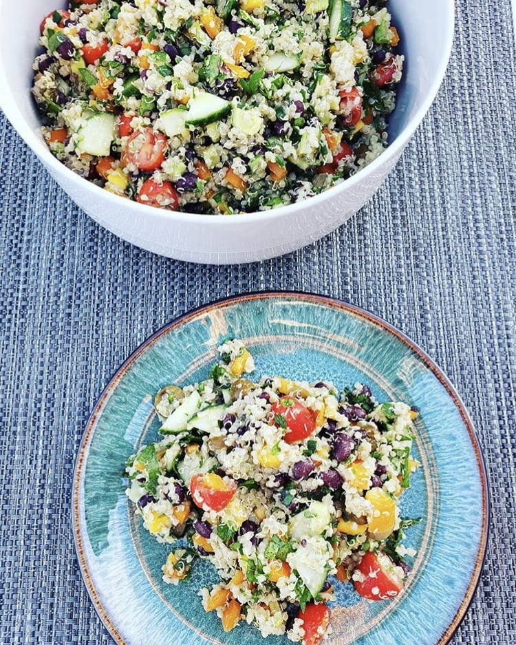
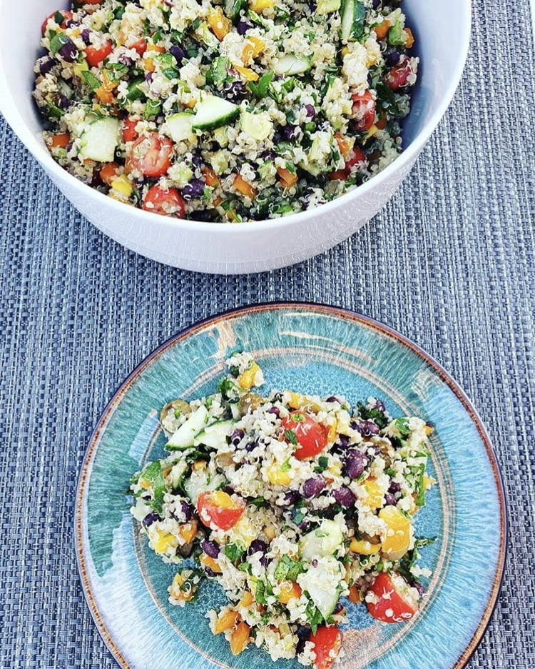

I love hiking and exploring the outdoors!
I enjoy cooking and putting a spin on dishes I'm inspired by.
I love learning and visualizing things from a new perspective.
Hello! My name is Manasa Andru. I'm an aspiring UX Designer based in the Bay Area.

My exposure to UX Design first started when I was invited to attend a Usability Testing Meetup in San Francisco. There I discoverd some of the many exciting roles UX Designers perform in their line of work, which complimented greatly with my own interests and skillsets that I've acquired from my background in Psychology and Marketing. Learning more about the UX Design also gave me insight in how I'd like to grow and develop in the future professionally. Since then I've enrolled in UC Berkeley's UX/UI Design Bootcamp to become more knowledgeable within the field, and strive to become a desginer myself soon.
 

I love hiking and exploring the outdoors!
I enjoy cooking and putting a spin on dishes I'm inspired by.
I love learning and visualizing things from a new perspective.